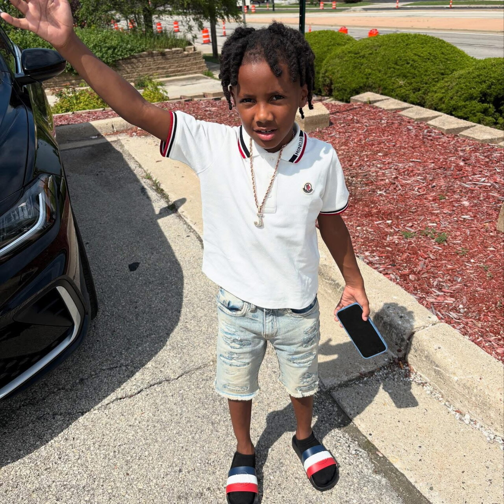

October 11, 2026
15-year-old sentenced to 10 years in prison in the Jamal White Amber Alert abduction


Courtroom frame and Jamal White family photo via TMJ4 News
15-year-old sentenced to 10 years in prison in the Jamal White Amber Alert abduction
The teenager who took 7-year-old Jamal White at gunpoint last summer — setting off an Amber Alert and a massive search across Milwaukee — was sentenced Friday to 10 years in prison.
Barry Coleman, now 15, stood in Milwaukee County Circuit Court as Judge David Borowski imposed 10 years of initial confinement followed by seven years of extended supervision, with credit for 451 days already spent in custody.
What happened last summer
Coleman was 14 when Jamal was abducted near 61st and Hustis streets on July 11, 2025. The disappearance triggered an Amber Alert and a large search. Jamal was found safe the following day and was not physically harmed.
According to the criminal complaint, surveillance video showed Coleman armed with a handgun as he chased Jamal behind a home and carried him back to a waiting Jeep. Prosecutors said the group initially planned to rob Jamal's mother before the plan changed and the child was taken. Court documents say Jamal was held overnight while calls were made demanding money for his return.
From juvenile court to adult prison
Coleman's case began in juvenile court — a July 2025 petition accused him of kidnapping, hostage-taking and weapons offenses. It was later moved into adult court. Coleman pleaded guilty in July to robbery with use of force and possession of a firearm by an adjudicated delinquent; the kidnapping and under-18 weapons counts were dismissed and read in for sentencing, according to court records.
On Friday, Borowski imposed eight years of initial confinement plus four of extended supervision on the robbery conviction, and two more years plus three of extended supervision on the firearm conviction — to run consecutively, for the 10 + 7 total.
The judge repeatedly described the underlying crime as extraordinarily serious, calling Coleman's conduct "aggravated" and "heinous." But he also said Coleman's age played a significant role in the punishment: "The only reason, Mr. Coleman, we're discussing the numbers we're discussing is because of your age," Borowski said, adding that the conduct alone could have warranted a substantially longer sentence.
The apology
During Friday's sentencing, Coleman apologized directly for taking Jamal:
"I took him away as he was yelling for me not to take him away from his family. I knew it was wrong then, and I know it was wrong now."
He said he was sorry for frightening Jamal and his family and took responsibility: "I am the only person responsible for my action."
His defense attorney, Katherine Holloway, told the court Coleman had experienced significant trauma at a young age — he witnessed the shooting death of a person he viewed as a father figure when he was 12 — and that two psychologists diagnosed trauma-related conditions. Holloway said Coleman had participated in individual therapy and restorative justice programming at a juvenile treatment center and had improved academically and behaviorally. The defense asked for 10 years split five and five.
Coleman told the court he plans to continue treatment, earn his high school diploma, and eventually attend college and find steady employment. Borowski acknowledged the remorse and potential — but said the seriousness of what happened required a significant prison sentence.
Borowski also ordered Coleman to have no contact with Jamal and his family or with the two other defendants charged in the case.
Two more cases pending
The cases against Corey Williams and Fabian Johnson remain pending. Johnson has pleaded not guilty to kidnapping as a party to a crime and is scheduled for trial in December. Williams has pleaded not guilty to charges that include kidnapping with intent to transfer property and taking hostages; his next hearing is also in December.
No victim impact statement was submitted for Friday's hearing, and prosecutors told the judge no one was expected to appear on Jamal's behalf.
Source: TMJ4 News — read the original report
← Back to latest stories